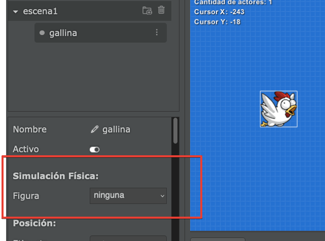
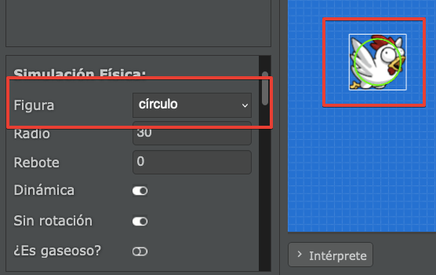
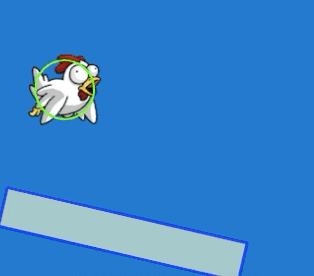
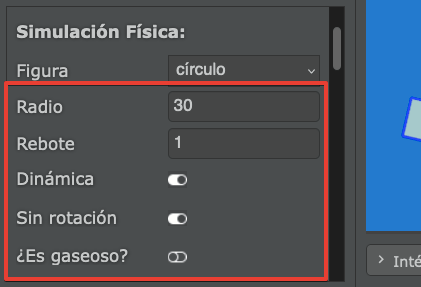
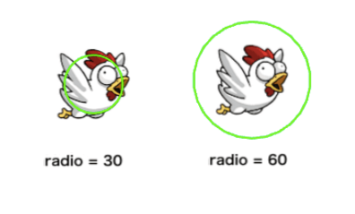
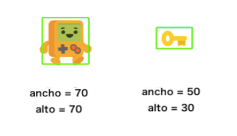
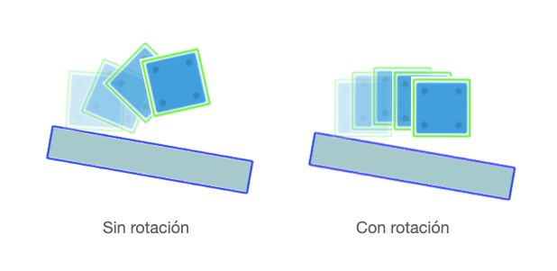

Pilas Engine містить фізичний механізм, який змушує акторів зіштовхуватися, відскакувати один від одного, бути підкинутими та реагувати на гравітаційне прискорення сцени.
Цей фізичний механізм має багато варіантів, тому ми збираємося дослідити усі його можливі конфігурації в цьому розділі.
Щоб актор реагував на зіткнення або рухався як фізичний об’єкт, ми повинні активувати для нього вигляд фізичної форми на панелі властивостей актора.
На панелі властивостей присутній розділ з назвою "Simulación Física" (Фізичне моделювання), а у розділі міститься властивість з назвою "Figura" (Форма):

Якщо ця властивість має значення "ninguna" (немає), актор не зможе зазнавати зіткнень. Актор буде лише відображеним на екрані.
Якщо властивість має значення "círculo" (коло) або "rectángulo" (прямокутник), ми побачимо, що актор отримує фізичну форму, окреслену зеленим кольором, певного розміру:

Завдяки цій властивості актор реагуватиме на фізику сцени, наприклад, якщо ви розмістите платформу і натиснете кнопку "Запустити", актор почне підстрибувати ось так:

Як можна помітити, під час вибору фізичної форми з’являються додаткові властивості, такі як radio (радіус), rebote (відбивання), dinámica (динамічний) тощо:

Властивість radio (Радіус) вказує розмір зіткнення, якщо актор має фізичну форму кола:

Бажано, щоб розмір фізичної форми відповідав розміру зображення актора, оскільки фізична форма буде невидимою для тих, хто грає у вашу гру, гравці бачитимуть лише зображення актора.
Ці властивості схожі на властивість radio, але будуть доступні лише якщо обрана фізична форма rectángulo (прямокутник):

Вищезгадані фізичні форми використовуються найчастіше, оскільки вони є найпростішими з усіх.
Властивість rebote (Відбивання) буде вказувати на те, у який спосіб потрібно рухати актора, коли він контактує з іншим. Якщо значення відбивання дуже маленьке, наприклад 0, удар призведе до повної зупинки об’єкта. Тоді, як значення порядку 1.5, змусять об’єкт відштовхнутися сильніше.
Зверніть увагу, що реакція актора залежатиме від значення властивості rebote (відбивання) обох акторів.
Властивість dinámica (Динамічний) може мати значення так або ні. Фізична форма з динамічний=так буде підстрибувати та рухатися відповідно до гравітаційного прискорення сцени.
Якщо фізична форма має властивість динамічний=ні, актор не реагуватиме на гравітаційне прискорення. Це чудово підходить для створення стін, платформ або перешкод, які ми не хочемо рухати з будь-якої причини.
Властивість sin_rotacion (Без обертання) служить для фіксації повороту актора, як показано на наступному зображенні:

Ця властивість ідеальна для персонажів, оскільки ми не хочемо, щоб вони виглядали нахиленими під час зіткнення.
Властивість ¿Es gaseoso? (Прозорий) використовується, щоб змусити актора поводитися як привид, і жодна фізична форма не може вдарити його чи інших акторів.
Зіткнення (колізії) дозволяють коду виконуватися у відповідь на контакт між різними акторами. Функції можна налаштувати для виконання майже будь-яких завдань: відтворення звуку для посилення впливу, видалення будь-якого з учасників контакту, створення ефектів тощо.
Наприклад, уявіть, що ми маємо цих трьох акторів:
Під час запуску гри платформа буде зафіксована на екрані. При цьому м'яч і ящик збираються рухатися вниз і зіштовхуватися.
У цьому разі автоматично викликається функція cuando_comienza_una_colision як тільки двоє акторів контактують. Наприклад, функція cuando_comienza_una_colision викликається, коли м'яч стикається з ящиком, а потім з платформою.
class pelota extends Actor {
cuando_comienza_una_colision(actor: Actor) {
if (actor.etiqueta === "caja") {
return true;
}
if (actor.etiqueta === "plataforma") {
this.decir("О, я зіткнувся з платформою!");
}
}
}У коді є дві цікаві речі, у нас є функція cuando_comienza_una_colision всередині класу "pelota" (куля), щоб виявити зіткнення, і ми також намагаємося розрізнити, між якими акторами відбувається зіткнення, використовуючи etiquetas (мітки).
true.Є три дуже важливі моменти, коли відбуваються зіткнення:
Щоб відрізнити ці випадки, викликаються три функції. Це приклад того, як ці функції оголошуються в коді актора: